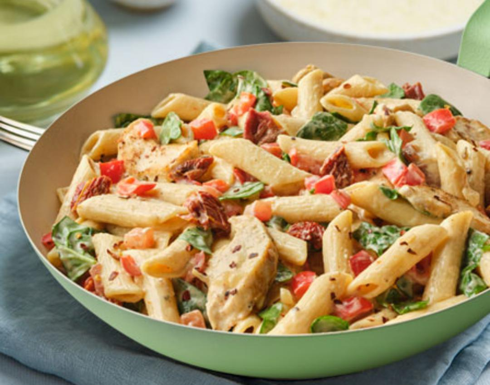

PASTA

Description
Pasta, a cherished culinary classic originating from Italy, has become a global sensation. Crafted from a simple mix of wheat flour, water, and eggs, pasta boasts a myriad of shapes suitable for various recipes. Its adaptability makes it a favorite canvas for diverse sauces, proteins, and vegetables, contributing to its widespread appeal among both home cooks and professional chefs.
Cooking pasta involves boiling it in salted water until achieving the sought-after al dente texture—firm to the bite yet tender. This crucial step, combined with pasta's versatility, allows it to pair seamlessly with a range of sauces, from hearty meat-based ragù to light and zesty tomato variations. Pasta's ability to harmonize with diverse flavors makes it a satisfying and universally enjoyed dish.
Ingredients
- Semolina Flour
- Water (in addition to eggs or as an egg substitute)
- Durum Wheat Flour (common for certain pasta types)
- Olive Oil (for flavor and preventing sticking)
- Whole Wheat Flour (for a healthier option)
- Spinach or Tomato Puree (for flavored pasta)
- Herbs and Spices (such as basil, garlic, or pepper, for added flavor)
- Ricotta or Parmesan Cheese (for stuffed pasta)
- Cornmeal or Rice Flour (for dusting and preventing sticking during rolling/cutting)
Steps
- For a basic pasta dough, use approximately 2 cups of all-purpose flour for every 3 large eggs. Adjust as needed based on the number of servings.
- On a clean surface or in a large mixing bowl, create a mound with the flour. Make a well in the center.
- Crack the eggs into the well. If making eggless pasta, add water gradually while incorporating it into the flour.
- Using a fork or your fingers, gradually incorporate the flour into the eggs (or water) until a shaggy dough forms.
- Knead the dough on a floured surface for about 8-10 minutes, or until it becomes smooth and elastic. If the dough is too sticky, add more flour as needed.
- Wrap the dough in plastic wrap and let it rest for at least 30 minutes. This allows the gluten to relax, making the dough easier to roll.
- On a floured surface, roll out the rested dough to your desired thickness. Ensure it is evenly rolled.
- Cut the rolled-out dough into your preferred pasta shape, such as fettuccine, tagliatelle, or pappardelle.
- Bring a large pot of salted water to a boil. Cook the pasta for 2-4 minutes (depending on thickness) until al dente.
- Drain the pasta and toss it with your favorite sauce, or use it in your desired recipe.